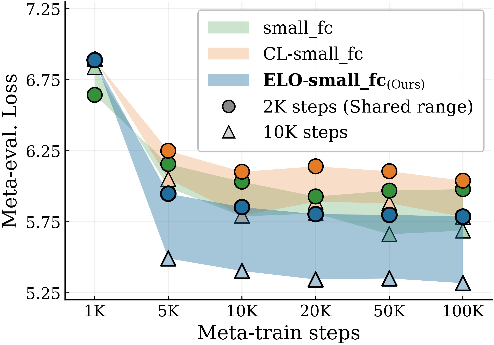
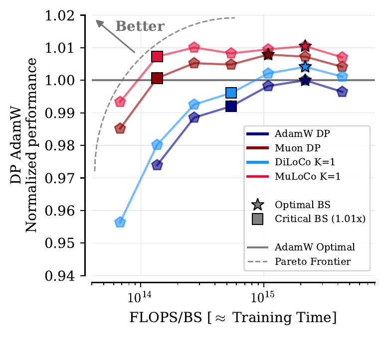
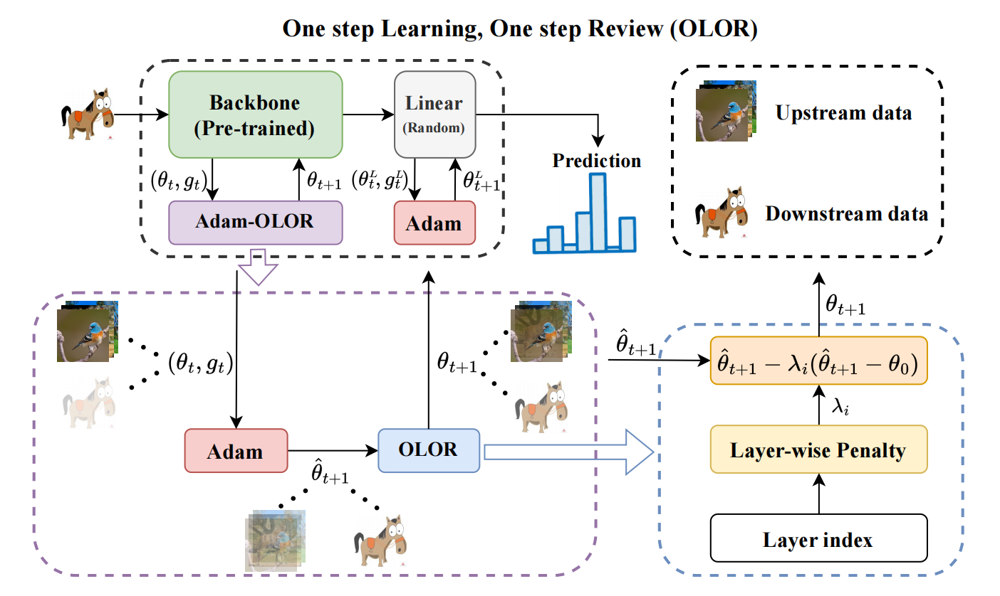
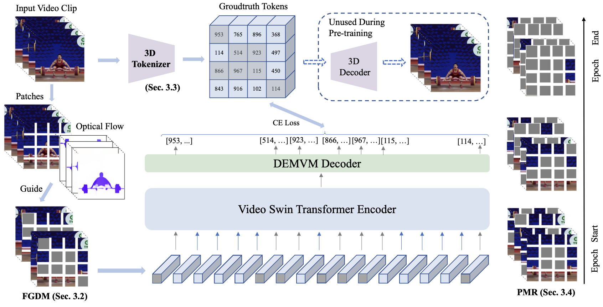
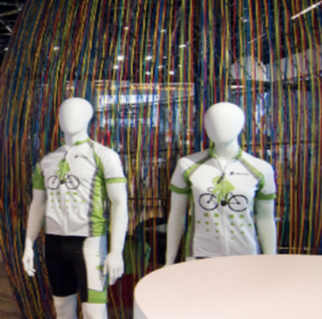

I am a research master student (Jan. 2025 – now) at Mila and Concordia University, working on learned optimization with Prof. Eugene Belilovsky.
I am also an enthusiastic learner, actively exploring the scaling of vision / vision-language self-supervised representation learning, and world models.
Feel free to reach out for interesting discussions and potential collaborations.
Studying AI is a continual pursuit of deeper understanding and self-transcendence.
Github / X / Google scholar / Email
Papers



One step learning, one step review.
AAAI'24.
paper / code


2nd place solution to Google Universal Image Embedding.
ILR Workshop, ECCV'22. Oral.
paper / code / competition
Talks
2022 Oct.
Oral presentation at ILR Workshop, ECCV'22.
Academic Service
Reviewer
NeurIPS, AAAI